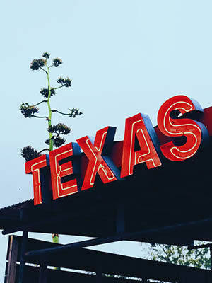

Texas
Also known as The Lonestar State.
Interesting Facts
FACTS:

Major Texas Cities
| Cities |
Population |
Year |
| Houston |
7.1 Million |
2020 |
| Dallas |
1,382,270 |
2020 |
| Austn |
2,053,000 |
2020 |
San Antonio is also a major city in Texas. Because of its diverse history and culture, it is one of the most known cities around the world. San Antonio attratons include The Riverwalk and The Alamo.
San Antonio Attractions:
- The Alamo
- The Riverwalk
- Six Flags Fiesta Texas
- Enchanted Rock
- Food from different backgrounds
Things To Do In SA!
Come visit Texas.